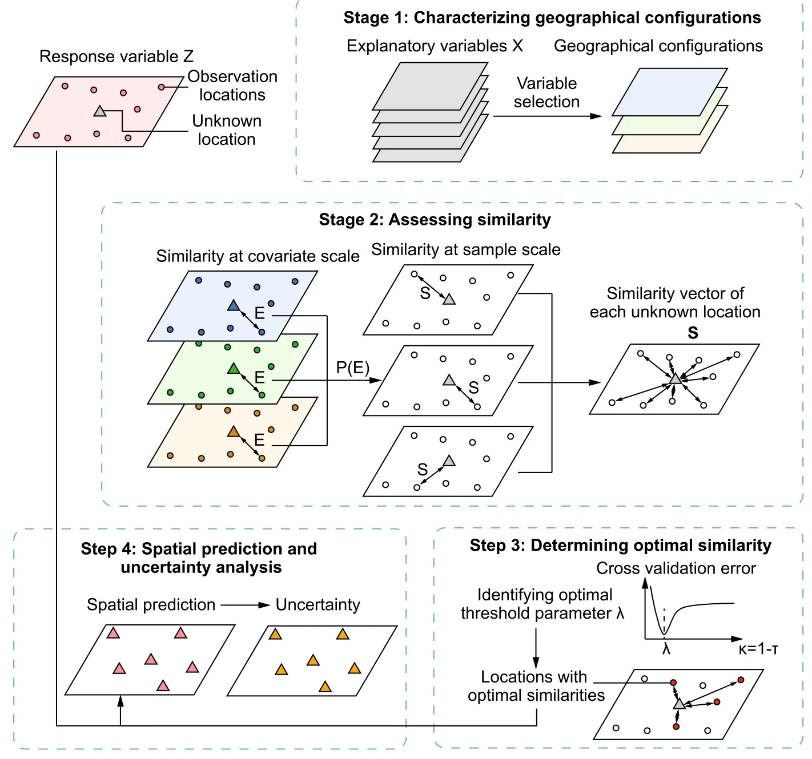
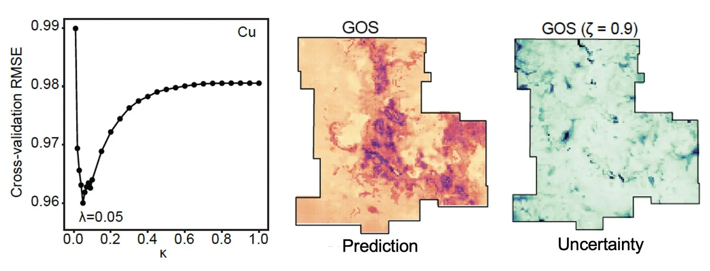
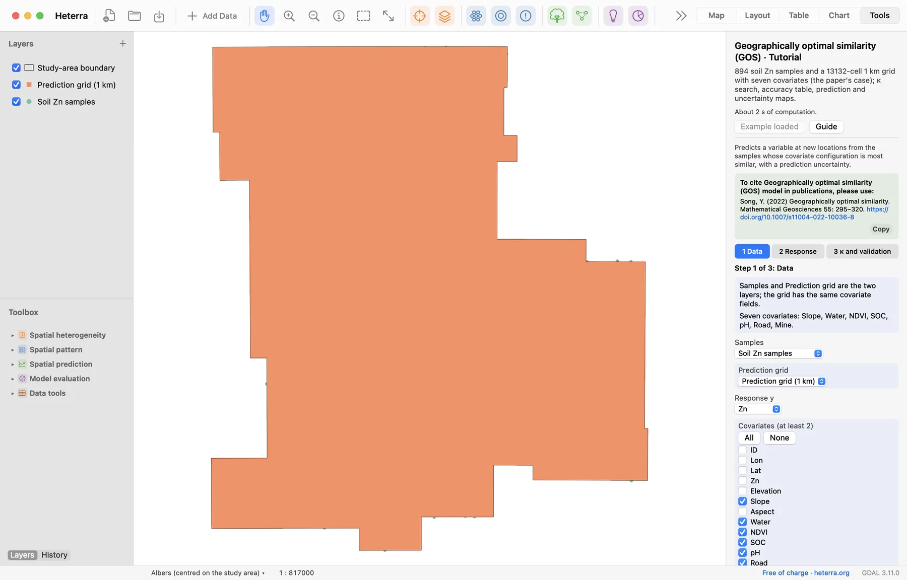
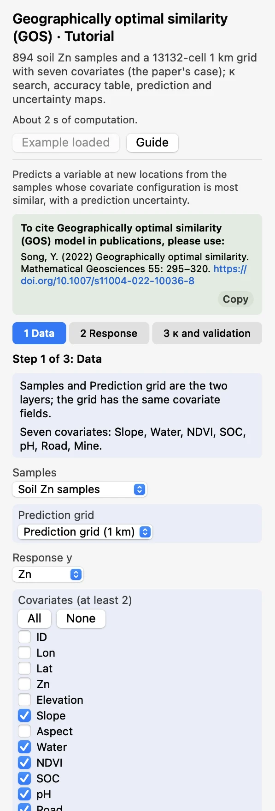
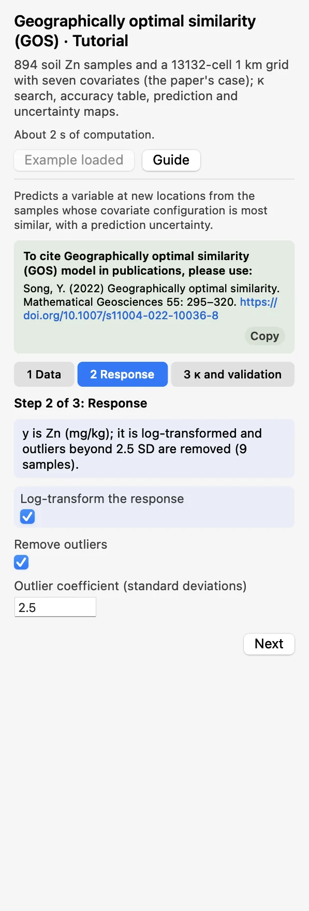
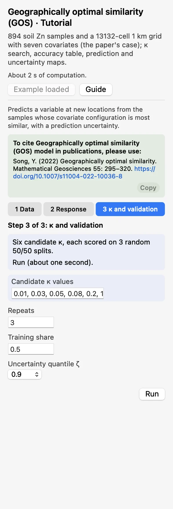
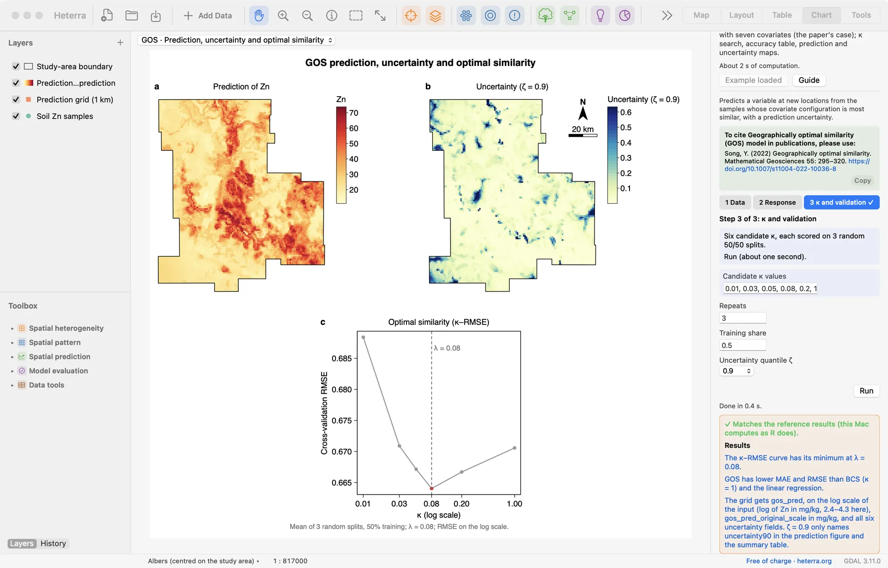
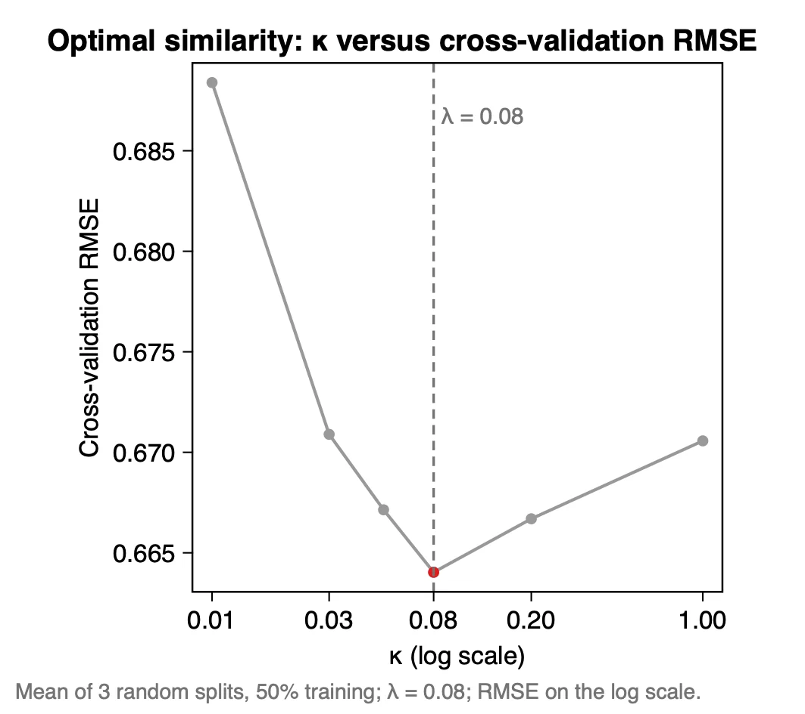
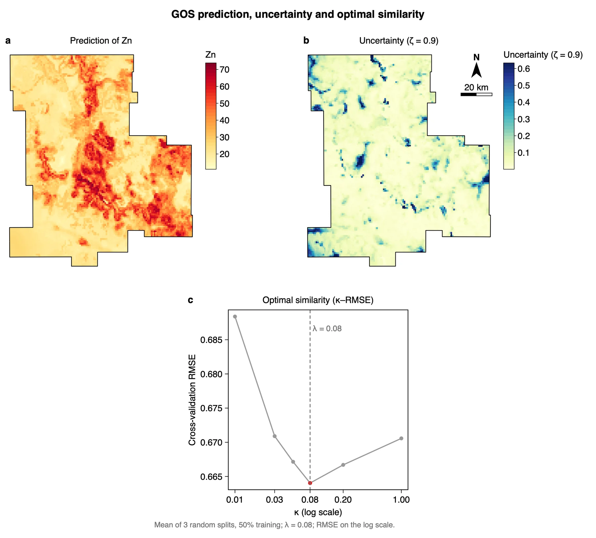

Part 4 · Spatial prediction · Chapter 7
GOS
Geographically optimal similarity
The question
What is the value of my variable at locations without samples, judged from the samples whose covariates are most similar, and how far can each prediction be trusted?You need
A samples layer with a numeric response y and at least two numeric covariates, and usually a prediction grid with the same covariate fields. At least 30 usable samples.You get
The optimal share of similar samples (λ), a prediction and an uncertainty at every grid location, and the accuracy of GOS against two other models.1The method
The idea
GOS rests on a simple principle: locations with a similar geographical configuration, that is, similar values of the covariates, have similar values of the response. To predict at a new location, it finds the samples whose covariates are most similar to that location's and averages their values of y, giving more weight to the more similar ones (Song 2022). Distance between locations plays no part: a sample far away with the same slope, vegetation and soil counts more than a neighbour in a different setting.
For each covariate, a Gaussian similarity between the prediction location and every sample.
Over the covariates, the similarities are combined with a minimum: two locations are as similar as their least similar covariate.
Only the share κ of the most similar samples is kept; the prediction is their similarity-weighted mean.
Uncertainty = 1 − the ζ-quantile of the retained similarities.
How many samples to keep is the one choice that matters, and GOS makes it by cross-validation: each candidate κ is scored on repeated random splits of the samples into a training and a test part, and the κ with the lowest mean RMSE is the optimal one, written λ. With κ = 1 all samples are used; this is the basic configuration similarity (BCS) model, which GOS is compared with.

What a run gives
| Result | Question | Form |
|---|---|---|
| Optimal similarity | Which share κ of the most similar samples predicts best? | Cross-validation RMSE of each κ, as a chart and a table; the lowest is λ |
| Accuracy | Does GOS predict better than BCS and than a linear regression? | MAE and RMSE of the three models on the same splits, and the error reduction by GOS in % |
| Prediction | What is y at each grid location? | Fields on a copy of the grid, and a map |
| Uncertainty | Where are there few samples similar to the location? | Six fields, for six values of ζ, and a map of one of them |
When to use it
- You have point samples of a variable and covariates that cover the whole area, and want a map of the variable.
- The relation between y and the covariates is not linear, or differs between settings, so that a single regression fits poorly.
- You want an uncertainty at every location that says where the samples do not represent the area.
Where it has been used
| Field | Response y | Spatial unit | Study |
|---|---|---|---|
| Geochemistry | Trace elements in soil (Cu, Zn, Pb) | Sample point, predicted on a grid | Song (2022) |
| Soil mapping | Soil properties, from few samples | Sample point | Zhu et al. (2015), the BCS model (κ = 1) |
Any response measured at some locations fits, when the covariates are known at every location to predict: soil properties, air quality, species abundance, house prices, disease incidence.

Keep in mindThe uncertainty is a measure of similarity, not an error in the units of y: high uncertainty means that few samples resemble the location. And because the model does not use coordinates, it cannot pick up a spatial trend that none of the covariates carries.
2In Heterra
2.1 Prepare your data
Two layers, in any format Heterra reads (Part 1 shows how to add data).
| Layer or field | Content | In the example |
|---|---|---|
| Samples | One row per observation: points, polygons or a table | 894 soil samples |
| Response y | Number | Zn, soil zinc in mg/kg |
| Covariates | At least two numbers | Slope, Water, NDVI, SOC, pH, Road, Mine |
| Prediction grid (optional) | The locations to predict (raster cells or points), with covariate fields of the same names and no y | 13,132 cells of 1 km |
| Boundary (optional) | A polygon layer | gos_boundary: the outline on the maps in the charts, which show only the cells inside it. It changes no result. |
Unlike most examples in this guide, this one is not simulated: it is the case of the paper, soil zinc in the Leonora district, Western Australia.
2.2 Run the example, step by step
Open the tool from the Toolbox (Spatial prediction → GOS), click Tutorial, then Load Example. The samples, the grid and the boundary appear on the map, and the panel on the right is filled in for you.

The panel has three steps. Next moves on; Run appears at the last step, because only that step computes.

DataChoose the Samples and the Prediction grid, the Response y (Zn) and tick the seven covariates.
ResponseLog-transform the response on, and Remove outliers at 2.5 standard deviations. Nine samples are removed.
κ and validationKeep the candidate κ (0.01, 0.03, 0.05, 0.08, 0.2, 1), 3 repeats and a training share of 0.5. Click Run.
The run takes about one second. The Chart page opens with the prediction figure, and the panel lists every result under Outputs: the tables, the prediction fields and the figures. A green line says that the results match the reference results computed with R.

2.3 With your own data
- Add the samples and the grid (Add Data), open GOS from the Toolbox and choose both layers in step 1.
- Choose y and at least two covariates. Leave out identifiers and coordinates, which are listed with the other numeric fields.
- Turn on the log transform for a strongly right-skewed response (y must then be above 0). Start with the default κ values and add values around the minimum if the curve is still falling at one end.
- The grid must contain every covariate you select, with the same field names. Grid rows with a missing covariate are skipped (their results are NA); samples with a missing y or covariate are dropped.
- At least 30 usable samples and 2 covariates. A constant covariate makes the similarity undefined and the run stops; remove it.
- Coordinates are not used by the model, only for the maps. Since version 1.6.0, when the grid is a polygon layer the maps draw its polygons, coloured by value.
- The similarity scale depends on all grid cells together: predicting a grid in parts, or a thinned grid, gives slightly different numbers, as in the R package.
- Without a grid, GOS predicts the held-out samples of the first split, and the fields are written to the samples layer.
- Column names, category values and file names are best written with English letters, digits and underscores.
3Reading the results
Read the results in this order: the κ–RMSE chart first (which κ, and how clear is the choice?), then the accuracy table (is GOS better than the alternatives?), then the two maps (what is predicted, and where is it weak?).
3.1 Optimal similarity

What it shows. For each κ, the RMSE on the test samples, averaged over the 3 random splits (50% training). The table κ and cross-validation RMSE has the same numbers:
| κ | Cross-validation RMSE | |
|---|---|---|
| 0.01 | 0.6884 | |
| 0.03 | 0.6709 | |
| 0.05 | 0.6671 | |
| 0.08 | 0.6640 | λ, the optimum |
| 0.2 | 0.6667 | |
| 1 | 0.6706 | All samples: the BCS model |
How to read it. The curve falls, reaches its minimum at λ = 0.08 and rises again: using the 8% most similar samples predicts best here. Very few samples (κ = 0.01) give the largest error, and using all of them (κ = 1) is worse than the optimum. Look at the vertical axis before drawing conclusions: the whole curve spans 0.664 to 0.688, so the choice of κ changes the error only a little in this case. Because y is log-transformed, the RMSE is on the log scale, not in mg/kg. If the minimum is at the first or last candidate, add candidates beyond it and run again. The table RMSE per κ and repeat shows how much the three splits differ.
"The optimal similarity was determined by cross-validation over κ = 0.01, 0.03, 0.05, 0.08, 0.2 and 1 (3 random splits, 50% training). The lowest mean RMSE, 0.664 on the log scale, was reached at λ = 0.08 (Figure X)."
3.2 Accuracy: GOS, BCS and linear regression
| Model | κ | MAE | RMSE | MAE reduction by GOS | RMSE reduction by GOS |
|---|---|---|---|---|---|
| GOS | 0.08 | 0.516 | 0.664 | ||
| BCS | 1 | 0.525 | 0.671 | 1.6% | 1.0% |
| MLR | 0.554 | 0.699 | 6.9% | 5.0% |
What it shows. The mean absolute error and the RMSE of GOS at κ = λ, of BCS and of a multiple linear regression (MLR) with the same covariates, all on the same splits as the κ search. The last two columns say by how many per cent GOS lowers each model's error.
How to read it. GOS has the lowest MAE and RMSE of the three. Report the size of the gain as well as its direction: against the linear regression the RMSE is 5.0% lower, against BCS 1.0%. With a log-transformed y the errors are on the log scale and cannot be read as mg/kg. The values are means of three splits; with more Repeats they are steadier.
"On the same three random splits, GOS (κ = 0.08) had lower errors (MAE 0.516, RMSE 0.664, log scale) than BCS (0.525, 0.671) and multiple linear regression (0.554, 0.699); it reduced RMSE by 1.0% and 5.0%."
3.3 Prediction and uncertainty

What it shows. Panel a maps the prediction in the unit of y. Panel b maps the uncertainty at the chosen ζ; its colours end at the 99th percentile, so that a few extreme cells do not flatten the rest. Both show only the cells inside the boundary. The numbers are fields on a copy of the grid:
| Field | Content |
|---|---|
gos_pred | The prediction on the modelling scale. With the log transform on it is the log of the input (here about 2.4 to 4.3), not mg/kg. |
gos_pred_original_scale | exp of the log prediction, in mg/kg. This is the field of panel a. |
uncertainty90 … uncertainty100 | 1 − the ζ-quantile of the retained similarities, for ζ = 0.9, 0.95, 0.99, 0.995, 0.999 and 1. All six are always written. |
How to read it. In the example the predicted zinc is highest in a band through the centre of the district and towards its south-east, with values up to about 70 mg/kg, and lowest in the south-west and north-west, near 20 mg/kg and below. Most of the uncertainty map is pale, below 0.1; darker patches, in the south-west corner and at several places along the edges, are locations whose covariates few samples resemble. Read the two maps together: a high or low prediction in a dark patch rests on little evidence. Uncertainty quantile ζ only names the field that panel b shows and the Run summary table lists; it changes no value. A smaller ζ gives a higher uncertainty.
"Soil Zn was predicted on the 1 km grid with GOS (Song 2022) from seven covariates, after a log transform and the removal of outliers beyond 2.5 standard deviations (9 samples). Predictions were back-transformed to mg/kg (Figure Xa); the uncertainty (ζ = 0.9) is below 0.1 over most of the area and higher where few samples have a similar configuration of covariates (Figure Xb)."
3.4 Exporting
Export the figure from the Chart page as PDF or SVG (vector) or PNG at 300 dpi; Data CSV saves the numbers behind it. With known units the maps have no axes and carry one north arrow and scale bar; Map units (Advanced) sets the units when the layer has no coordinate system. Export results in the panel writes a report of the run with the method, the steps, the figures and the tables (Part 1).
3.5 Reading the results together
The outputs tell one story: how many similar samples to use (the optimal similarity), whether this choice predicts better than using all samples or a regression (the accuracy), what is predicted (the prediction map) and where the samples do not represent the area (the uncertainty map). Read them in this order:
- Optimal similarity: whether the curve has a minimum below κ = 1, and how deep it is. A curve that falls all the way to κ = 1 means that no threshold helps and that BCS is the right model for your data.
- Accuracy: whether GOS is ahead of BCS and of the linear regression, and by how much.
- Prediction: where y is high and low.
- Uncertainty: where the model extrapolates, and whether these are the places with few samples.
What GOS is notIt is not a method based on distance: it never reads the coordinates, so it cannot use a spatial pattern that no covariate carries. It is not a regression: it gives no coefficients. And its uncertainty is not an error bar: it says how similar the best samples are to a location, not how wrong the prediction may be.
3.6 From the results to a manuscript
| Section | What to write | From Heterra |
|---|---|---|
| Methods | The similarity function and the minimum over the covariates; κ and ζ; how λ was searched: the candidate κ, the number of repeats, the training share; the transform of y and the removal of outliers | The settings of the run (in the exported report); table Run summary |
| Results | Follow the order of the analysis: the κ–RMSE curve and λ, with the number of samples that λ keeps; the accuracy against BCS and the regression; the prediction map; the uncertainty at a named ζ | Figures Optimal similarity (κ–RMSE) and Prediction, uncertainty and optimal similarity; tables κ and cross-validation RMSE and Accuracy: GOS, BCS and linear regression |
| Discussion | Why a small share of similar samples predicts better than all of them; what a model without coordinates cannot show; where to sample next | The uncertainty fields uncertainty90 to uncertainty100; table RMSE per κ and repeat |
- κ is a share, so read λ together with the number of samples it keeps (λ × the number of samples). With few samples a small κ leaves too few of them for a stable prediction.
- More covariates are not better. The similarity is a minimum, so each added covariate can only lower it, and a weak covariate hides good matches.
- Report λ with the candidate κ and the number of repeats, and every uncertainty with its ζ. Without them a reader cannot check the values.
- A circular covariate such as aspect in degrees does not fit: 359° and 1° count as far apart. Use its sine and cosine, or leave it out.
4Exercises
Exercises 1 to 3 use the example. Exercise 4 is for your own data.
Exercise 1Read
Run the example with its settings. What is λ, and what is its cross-validation RMSE? Which of the three models in the accuracy table has the largest MAE?
Answer
λ = 0.08, with a mean RMSE of 0.664. The multiple linear regression has the largest MAE (0.554), against 0.525 for BCS and 0.516 for GOS.
Exercise 2Explore
Open the table κ and cross-validation RMSE. If 0.08 had not been among the candidates, which κ would have the lowest RMSE in this table? What does that tell you about how to choose the candidates?
Answer
κ = 0.2, with 0.6667, just below 0.05 with 0.6671. λ can only be one of the values you offer, so the candidates should be dense where the curve turns. Here the values around the minimum differ in the third decimal: the result is not sensitive to the exact κ between 0.05 and 0.2.
Exercise 3Interpret
A colleague maps the field gos_pred and writes: "Predicted soil zinc ranges from 2.4 to 4.3 mg/kg, with a prediction error (RMSE) of 0.66 mg/kg." What is wrong?
Answer
Both numbers are on the log scale, because the response was log-transformed. gos_pred is the log of Zn; the prediction in mg/kg is gos_pred_original_scale, which is the field mapped in panel a (roughly 10 to 75 mg/kg). The RMSE of 0.66 is an error of log(Zn) and has to be reported as such.
Exercise 4Your data
Run GOS on your own samples and grid with at least three covariates. Write three sentences for a results section: one on λ and the candidates you compared, one on the accuracy of GOS against BCS and the linear regression, and one on where the prediction is high and where the uncertainty is high. Export the figure as PDF.
Checklist
Is λ inside the range of your candidates, not at its first or last value? Did you say on which scale MAE and RMSE are given? Did you give the size of the error reduction, not only its direction? Does the grid have every covariate under the same field name, and did you check how many grid rows were skipped for missing values?
References
- Song, Y. (2022). Geographically optimal similarity. Mathematical Geosciences 55: 295–320. doi:10.1007/s11004-022-10036-8
- Zhu, A.-X., Liu, J., Du, F. et al. (2015). Predictive soil mapping with limited sample data. European Journal of Soil Science 66(3): 535–547. doi:10.1111/ejss.12244
- R package geosimilarity: cran.r-project.org/package=geosimilarity. Heterra's results match geosimilarity 3.9.
Heterra guide, for version 1.6.0. © 2026 Yongze Song. Documentation and tutorial data: CC BY 4.0.